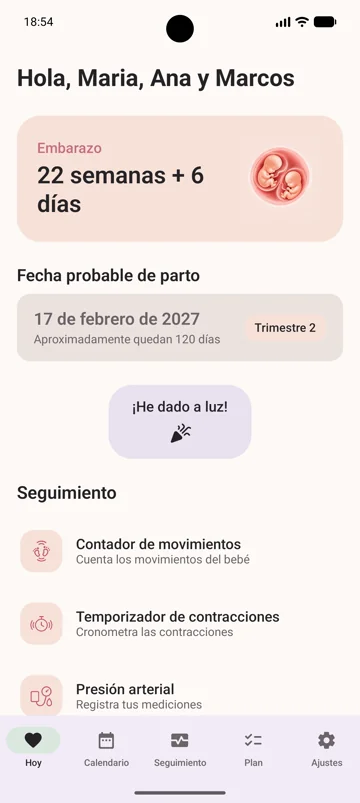
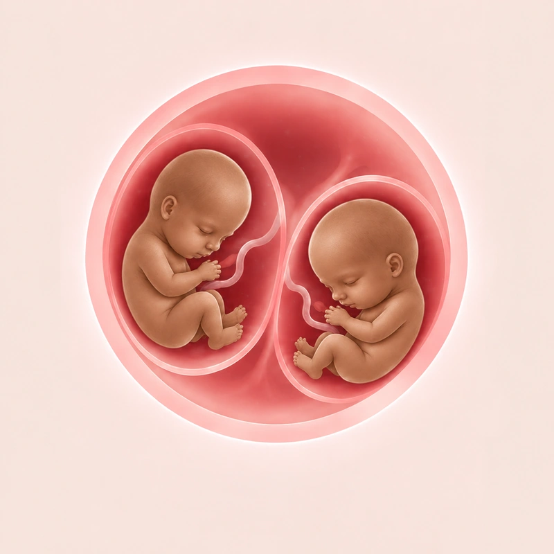
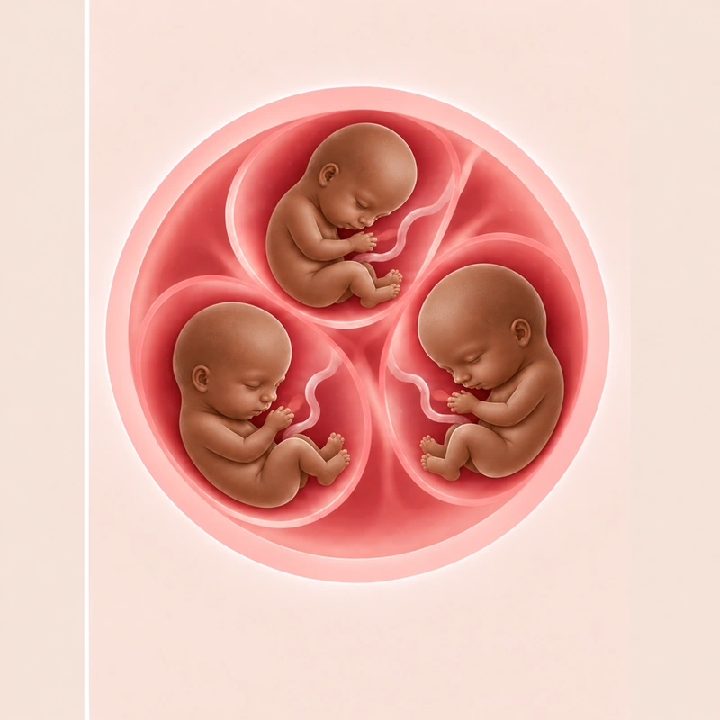
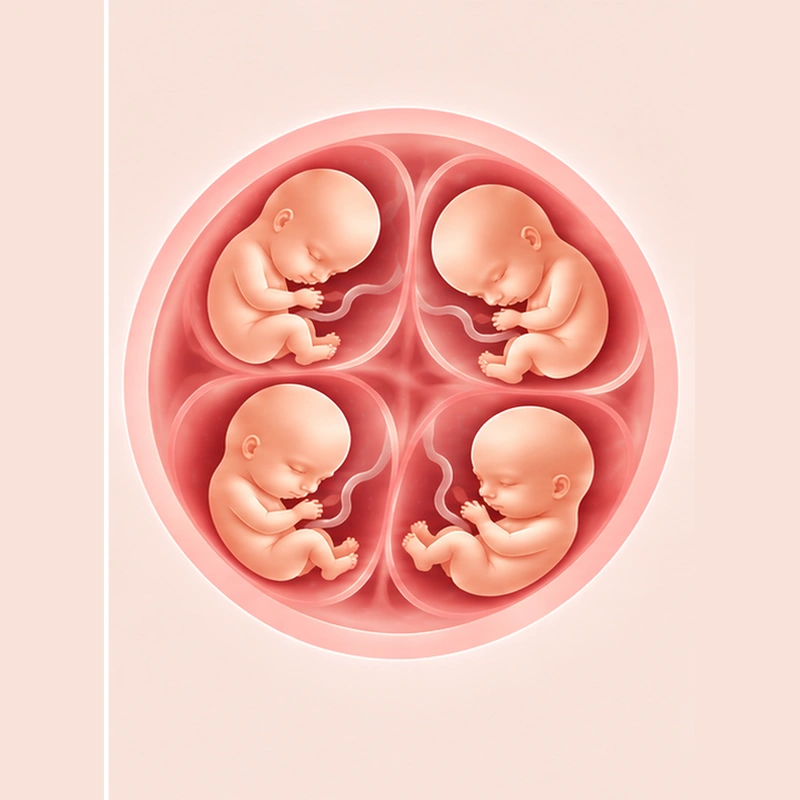
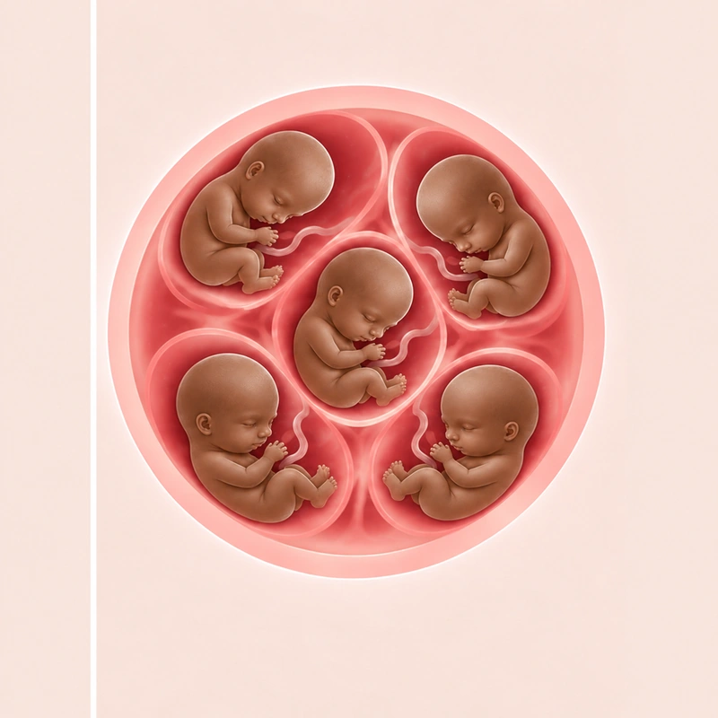
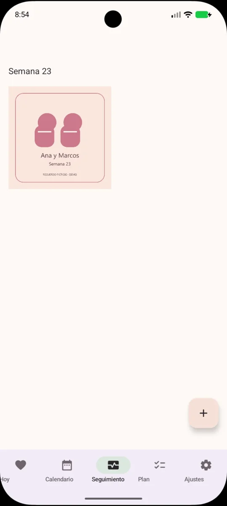
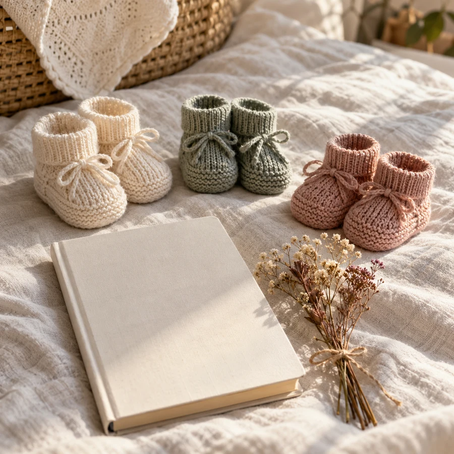
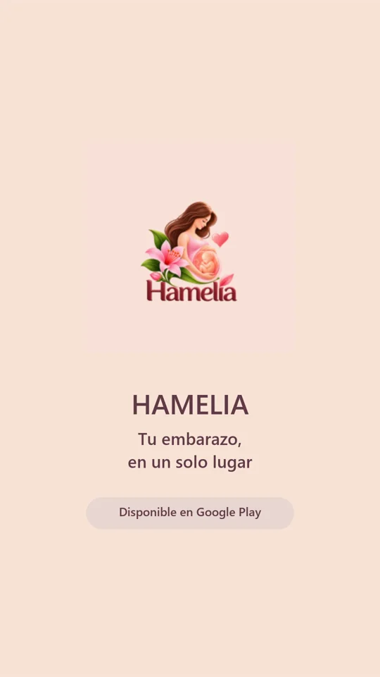

Movimientos del bebé
Cuenta los movimientos de tu bebé y conserva un registro de cada sesión.
TU EMBARAZO, CONTIGO
Hamelia acompaña tu embarazo semana a semana. Descubre cada etapa y reúne tus registros y recuerdos en una app para Android.
App Android · Seguimiento del embarazo

HAMELIA
Descubre cada etapa con las ilustraciones y la información semanal de Hamelia, adaptadas a tu embarazo.
Hamelia acompaña embarazos de 1 a 5 bebés y adapta el seguimiento al número de bebés que esperas.




HAMELIA · ANDROID
Las herramientas esenciales de seguimiento del embarazo son siempre gratuitas, para acompañarte en tu día a día.
Cuenta los movimientos de tu bebé y conserva un registro de cada sesión.
Cronometra tus contracciones y guarda el registro para consultarlo después.
Anota tus mediciones de presión arterial y pulso para consultarlas en la app.
Guarda tus registros de peso y consulta su evolución durante el embarazo.
Anota tus síntomas y cómo te sientes para recordar cada día del embarazo.
Organiza tus registros de medicamentos y suplementos.
Organiza tus fotos del embarazo por semanas y vuelve a tus recuerdos.
La app ofrece funciones Premium. Consulta en Google Play los detalles y las compras disponibles.


HAMELIA
Tu álbum reúne los recuerdos del embarazo por semanas, para volver a esos pequeños grandes momentos.
Información semanal, herramientas y recuerdos. Descubre Hamelia en Google Play.
Disponible en Google PlayLa app ofrece funciones Premium. Consulta en Google Play los detalles y las compras disponibles.
